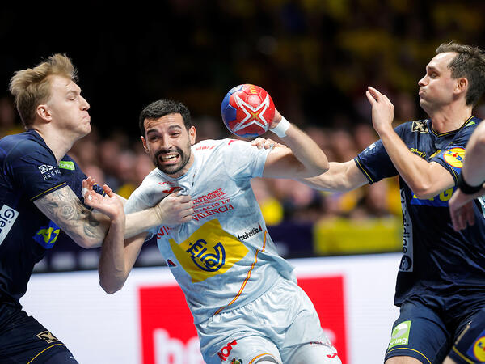

EZ IZAN ZALANTZARIK HISPANOEZ
29/01/2023 - 20:00
Espainiak Suedia garaitu zuen igande honetan Stockholmen (36:39, 22:18 atsedenaldian) 2023ko Munduko Txapelketako hirugarren posturako partidan.

29/01/2023 - 20:00
Espainiak Suedia garaitu zuen igande honetan Stockholmen (36:39, 22:18 atsedenaldian) 2023ko Munduko Txapelketako hirugarren posturako partidan.
28/01/2023 - 13:30
Hispanoak, beste behin ere, planetako lau selekzio indartsuenen artean daude. 2023ko Munduko Txapelketari agur esan aurretik, selekzioak igande honetan ekingo dio...
26/01/2023 - 18:00
Ez, ez gara Matrixi buruz ari; biharko partidaz ari gara, 18: 00etatik aurrera eta zuzenean Teledeportetik, Hispanos eta Danimarkaren artean Munduko Txapelketako finalerdietan...